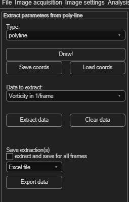
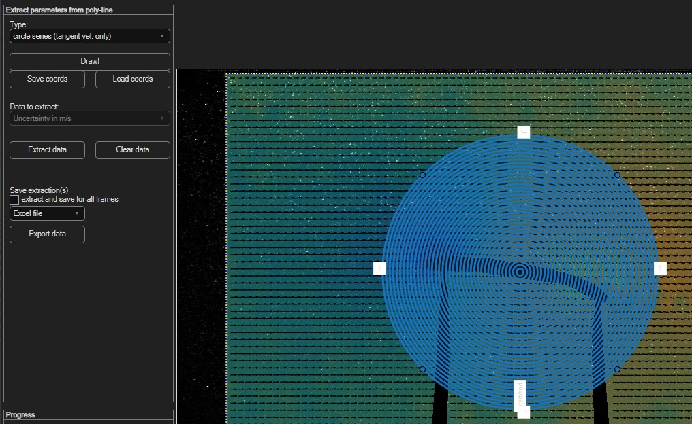
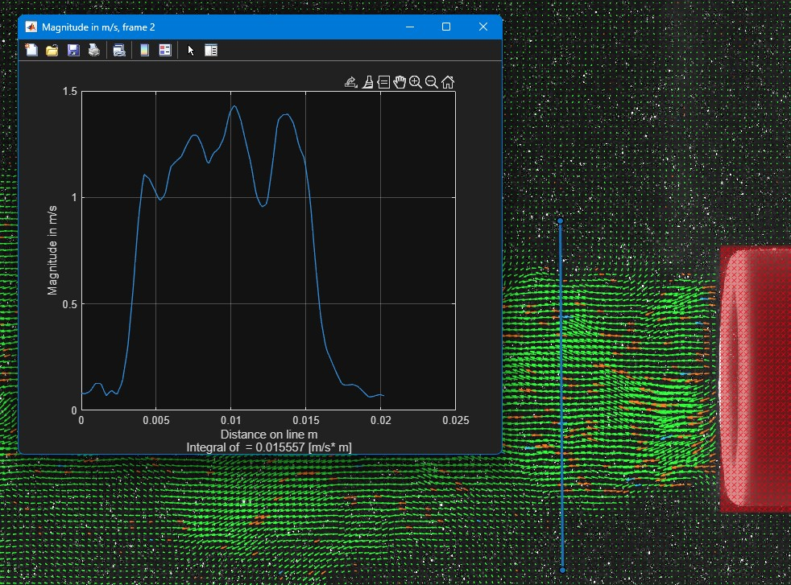

Parameters from poly-line
Draw a line or a circle across your data and extract a profile of any derived parameter along it — a velocity profile across a jet, or a tangential-velocity profile around a vortex core, for example.
Open via Extractions → Parameters from poly-line (Ctrl+P).

Drawing a line or circle
Choose a Type first:
| Type | How to draw it |
|---|---|
| polyline | Left-click to add each point; right-click to finish. |
| circle | Click twice with the left mouse button: first click sets the centre, second click sets the radius. |
| circle series (tangent vel. only) | Several concentric circles at once — restricted to extracting tangential velocity, useful for a velocity-vs-radius profile around a vortex core. |
Click Draw! to start, then draw in the image. Use Save coords / Load coords to reuse the same line or circle across sessions.

Extracting data
- Choose what to extract from Data to extract — the same derived-parameter list as Deriving spatial parameters, plus Tangent velocity for circles.
- Click Extract data to plot the profile along your line or circle.
- Click Clear data to remove it and start over.

Saving the extraction
Tick extract and save for all frames to extract across the whole session rather than just the current frame, choose a file format (Excel file or Text file), then click Export data.
Want an average over a region instead?
See Parameters from area — same idea, but for a whole
enclosed area rather than a line or circle.